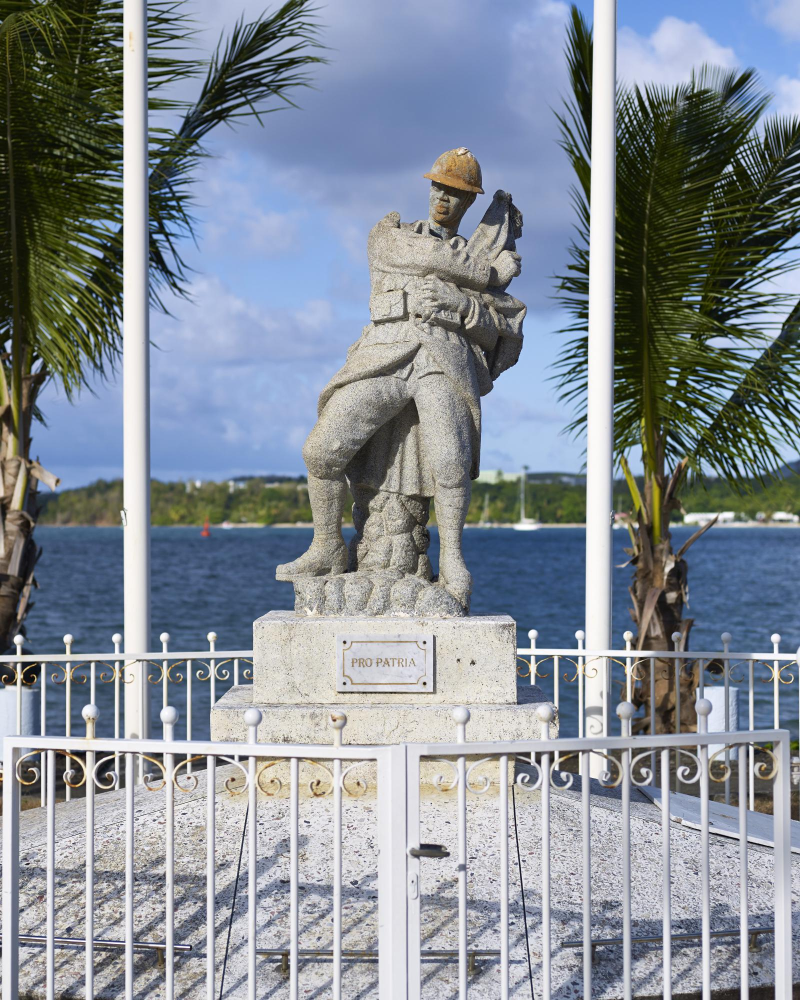

HISTORY OF THE MEMORIAL
Following the end of the First World War, as throughout the French territory, the cities of Martinique honored the memory of their citizens who fell in combat in Europe by building war memorials.
These structures symbolized the commitment of the Martinicans in the war and their mortal tribute. Indeed, out of a total population of 184,000 individuals, 8,000 men, aged 18 to 35, left Martinique to join the mainland. Unfortunately, a fifth of them never returned.
The first of these memorials was raised in La Trinité, while the most recent was built in Bellefontaine, after the founding of the town in 1950. Saint Pierre, having been destroyed in 1902, was at the time integrated into the town of Carbet during the First World War and therefore does not have a monument.
These war memorials, usually ordered from specialized companies in mainland France, stand out for their Afro-Caribbean representations of heroes, a rarity at the time.
The inscriptions and images engraved in the marble of these monuments are sometimes very specific. A striking example is the inscription "PRO PATRIA" inscribed on this statue, a Latin expression meaning "For the homeland". This phrase usually evokes the sense of dedication, loyalty, and supreme sacrifice for the good of one's country.

Image of the war memorial in the square of La Trinité.
Memorial in memory of
ADÉLAÏDE Reselay
ATTELLY Florentin
ATTELLY Joseph
BACLET Salomon
BARRIAU François
BASSIGNEL Ludger
BASSIGNEL Toussaint
BEAUCHAMP Séverin
BÉLISAIRE Victor
BENGON Eugène
BERCY Honoré
BÉRET Félix
BILNY Berté
BIVOUAC Pierre
BONIFACE Fulbert
BONTA Michel
BURGOS Théodore
CABOT Ignace
CAROUJEL Grégoire
CASTEL Edward
CATHARINE Benoît
CÉLAT Casimir
CÉMERY Noël
CHARLÉSIA Vincent
CILPA Joseph
CILPA Mathieu
CILPA Pierre
CILPA Vincent
CIRBA Armand
CIRBA Jean
DÉSIR Hippolyte
DORSAN Martin
DUFFAU Louis
ETOLINT Hippolyte
FÉLIXINE Fabien
FLORELLA Paulin
FONANT Louis
FOSTAN Thomas
GALLET DE ST AUBIN Marie J.
GENLY Léon
GÉROMEY François
GERTRUDE Saturnin
GIBON Fabien
HARNAIS Marc
HIMMER Jules
HIPPIAS Simon
IGOUT Eugène
JEAN-MARIE Guilbert
JEANNOT Jules
LABINSKY André
LACROIX Michel
LEDANGE Blaise
LESDÉMA Léo
LESDÉMA Placide
LÉZINSKA Paul
LITOR Modeste
MANON Victor
MANSCOUR Maximilien
MAQUICHON Pépin
MASSOLIN Ange
MOMPHILE François
NOIREN Jean
PALIN Romain
PALPY Hilarion
PANDOR Marius
PÉPHILY Romain
PERRIER Louis
PHILIPPE Paul
PICARDET Norbert
PIMPIDIARD Grégoire
RAPON Nestor
RAPON Pamphile
RAPON St Cloud
RÉVITON Jules
SÉJEAN Benoît
SÉLIGNY Sylvestre
SITHER Dédicace
SURIAM Louis
TORIS Jacques
TRIBEAU Raoul
VESTRIS Agénor